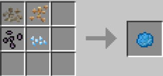

Гайд по: Witchery¶
Предисловие¶
Всем добрый день, на этот раз этот гайд будет для начинающих ведьмаков и ведьмочек, тем, кто любит проклятия, зельеварение, куклы вуду и тому подобные вещи. В общем, гайд будет делиться на несколько частей, ибо он большой по объёму, несильно, но прилично! Начнём.
С чего же начинать?¶
Семена¶
После того как вы появились на сервере (мире) вы разумеется идёте искать территорию, нашли? Что мы начинаем делать в первую очередь? Правильно – чистить территорию. Сейчас мы переключаем внимание на траву, да, да, на зелёную такую, красивую. Ваша задача начать её ломать, ломать и ещё раз ломать. Дело в том, что модификация Witchery добавляет нам новые семена для различных крафтов и рецептов. Когда вы сломаете приличное кол-во травы, вы обнаруживаете у себя в инвентаре семена пшеницы, но теперь с небольшим шансом могут выпасть и другие семена, а именно:
{kind=link}
Начнём по порядку:
-
Семена Мандрагоры: Посадка: Вспаханная земля и рядом должен быть источник воды. Когда вы начнёте собирать мандрагору, то есть шанс, что появится сама Мандрагора и начнёт орать и бегать как сумасшедшая, параллельно бить вас и накладывать эффект тошноты.
Дроп: Те же семена Мандрагоры и Корень (Цветок) мандрагоры. -
Семена Белладонны: Посадка: Вспаханная земля и рядом должен быть источник воды.
Дроп: Те же семена Белладонны и Цветок Белладонны -
Семена водного Артишока: Посадка: Этот цветок растёт на воде.
Дроп: Те же семена и Клубень Водного Артишок -
Семена Подснежника: Посадка: Вспаханная земля и рядом должен быть источник воды.
Дроп: Те же семена, Снежок и Сосулька. -
Семена Волчьего Аконита(Wolfsbane): Посадка: Вспаханная земля и рядом должен быть источник воды.
Дроп: Те же семена и Клубень Волчьего Аконита. -
Семена Чеснока (Garlic) Ну или же не семена, а просто чеснок. Посадка: Вспаханная земля и рядом должен быть источник воды.
Дроп: Вы сажаете чеснок и получаете взамен чуть больше чеснока, логично? Логично.
Все семена по перечислению (1 - 6)
Сзади слева находится Волчий Аконит, а сзади справа Чеснок
{kind=link}
Ведьмина печь¶
Как только мы запаслись всеми семенами и их ингредиентами – смело идём создавать Ведьмину Печь.
Создаётся она просто:

Её интерфейс выглядит так:
{kind=link}
Для её работы нам нужны глиняные кувшины. Основа их крафта это Кувшин из мягкой глины
{kind=link}
В дальнейшем этот кувшин из мягкой глины мы берём и кидаем в обычную печку на обжарку и уже получаем готовый Глиняный Кувшин.
{kind=link}
Печка эта не пережаривает руду. Её работа основана на прожарке саженцев различных деревьев, брёвен и еды. Как вы заметили, у неё есть несколько слотов, верхний слот справа – это слот 100% результата после прожарки, слот справа ниже – это уже не 100% шанс, как вы догадались.
В пример возьмём обычный Саженец Дуба, его 100% дроп – это древесный прах. А вот в слот ниже уже идёт такой особо важный ингредиент «Выдох Демона». Это скорее какая-то ароматическая настойка.
{kind=link}
С таким же успех можем взять Курятину. 100% дроп – это Жареная Курица, в ингредиент же идёт настойка под названием «Вонючий Дым» и так далее.
{kind=link}
А ещё, если вы нажмёте на стрелочку посередине, то можно посмотреть все рецепты, которые производятся в этой печи.
Под спойлером оставлю список всех предметов и какие настойки они дают:
- Дуб – Выдох Демона
- Берёза – Дыхание Богини
- Ель – Сила Возрождения
- Рябина – Дуновение Магии
- Боярышник – Благоухание Чистоты
- Ольха – Запах Неудачи
Ведьмины принадлежности¶
Следующим этапом будет – Ведьмин Котёл (Witch’s Cauldron). Делается он не так уж и тяжело. Нам нужен обычный ванильный котёл из обычного майнкрафта, пока вы его поставите и приготовите для готовки, мы тем временем начнём делать специальную смазывающую массу, а конкретно – Anointing Paste. Создаётся она из 4‑х семян добавляемых модом витчери, вот крафт: images 
{kind=link}
Эту Смазывающую пасту мы используем на ванильный котёл ПКМ и в результате он становится ведьминым, ну, а чтобы котёл уже полностью функционировал, завершающими действиями будут:
-
Копаем под котлом блок, ставим адский камень и поджигаем его – это топливо.
-
Котёл должен быть наполнен водой и полностью! (3 ведра для полного заполнения):
{kind=link}
Для чего мы вообще создавали этот котёл? А для дальнейшего развития в «ведьмологии» так скажем. Модификации Witchery помимо природных ресурсов(семян) добавляет ещё и 3 вида деревьев, но к сожалению их получить можно только двумя способами:
- Искать в данжах
- И создать с помощью Мутандиса.
Мы же будем рассматривать способ под номером 2. В этом котле мы как раз таки и будем создавать этот мутандис. Создаётся он с помощью 3х ингредиентов:
- Цветок Мандрагоры
- Выдох Демона
- Обычное Яйцо
Сама схема проста, кидаем предметы в котёл, НО! Тут очень важна очерёдность, первым обязательно нужно кинуть мандрагору, вторым выдох демона и так далее, будьте внимательны.